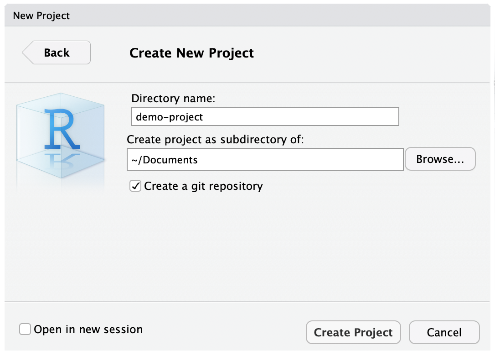
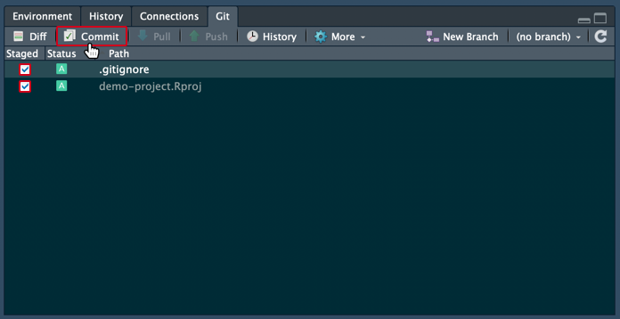
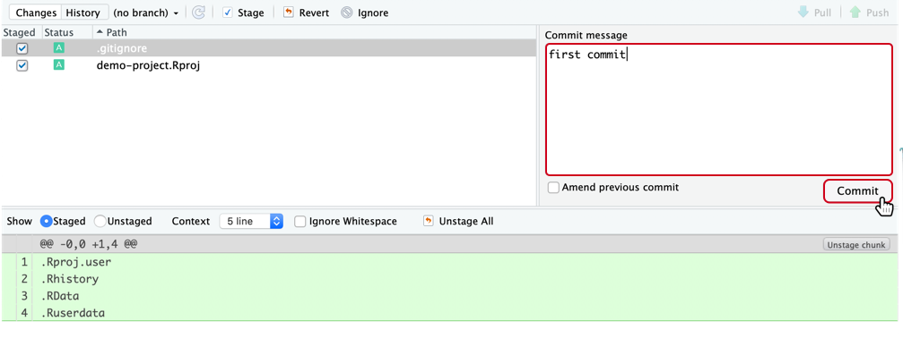
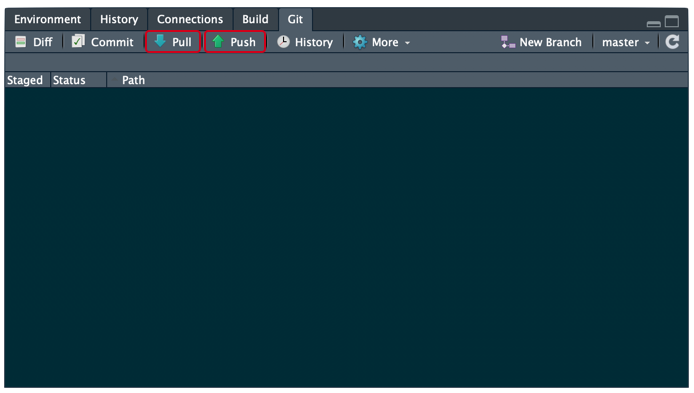

4 RStudio Git Integrations

Version control can be very useful when developing data analysis scripts. For that reason, the popular development environment RStudio for the R programming language has built-in integration with Git. While some advanced Git features still require the command-line, RStudio has a nice interface for many common Git operations.
RStudio allows us to create a project associated with a given directory to keep track of various related files, to be able to track the development of the project over time, to be able to revert to previous versions, and to collaborate with others, all using version control with RStudio projects and Git.
RStudio provides a GUI (Graphical User Interface) to use Git and GitHub. Basically, this means that you don’t need to use the command line and type out the instructions. Instead, there are buttons, prompts, and windows making the process of using version control user friendly and relatively straightforward.
4.1 Setup
First, Git and RStudio must be installed. Now, let’s configure RStudio to use Git.
- Open RStudio
- Go to Tools in the menu bar > Global Options > Git/SVN
- If “Git executable:” shows “(none)”, click “Browse” and select the git executable installed on your system. - On Windows, git.exe will likely be be in “Program Files”, specifically try
C:/Program Files/Git/bin/git.exe.

That’s it for attaching RStudio and Git. This will allow you to utilise the RStudio Git GUI tools inside R Projects.
4.2 Quick Start RStudio
- Set up R Project
- New Project - anytime you do any work that requires code, you should create an R project. This keeps your work together, seperates settings for different projects, and allows the use of version control. To do that, go to File in the menu bar and select “New Project”. In the window that appears, name your project, choose a folder/directory for where to store it, and ensure “Create a git repository” is selected.

- Exisiting Project - if you’re going to be working on a project that already exisits as a repository, you can link to this through RStudio too. Go to File > New Project > Version Control > Git and enter the details in the screen that follows (this will create a folder with a copy of any contents that were in the GitHub repository).

- Change, stage… - RStudio will keep track of all changes made to the files within your R project (not just R files). Any changes made will show up in the “Git” tab, usually the same pane that the “Environment” tab is on. When you’re ready to commit, save the files you’re working with and stage them by ticking the box to the left of the files in the Git pane, and then click on the “Commit” button.

- Commit - After clicking on “Commit”, a window will appear with the changes made for review and a prompt for a “Commit message”. Your commit message should describe the changes made and be consise, meaningful and written in imperative mode. Then, just click on “Commit”!

- Branching - As part of the recommended workflow, you should use branches to develop individual features, this means that you can edit files but keep an original to revert back to if required. Additionally, when team working, it allows for many parallel efforts, keeping teams focussed, and for shipping updates faster.
- New Branch - To create a new branch in RStudio, just click the “New Branch” button in the Git pane and give it a name. To switch between branches, click the dropdown to the right of the “New Branch” button and click the name of the branch you want to switch to. (When you select a branch, the state of the files that you committed in that branch will appear in both the Files pane in RStudio, and in your file explorer.)

- Merge Branches - When work from the working branch should be merged back to the master branch, this currently has no GUI option and must be done on the command line. This can be accessed from the “More” menu in the Git pane and selecting “Shell” or in the RStudio Terminal window. Once you’re in either of these, enter the command git merge
.
username@NSS000000 ~/Documents/demo-project (master)
$ git merge <branch>- Link to GitHub - If this is a new project, it won’t be linked to GitHub yet. RStudio currently doesn’t have a GUI option for this and must be done on the command line. As above, this can be accessed from the “More” menu in the Git pane and selecting “Shell” or in the RStudio Terminal window. Once you’re in either of these, enter the command
git remote add <name> <url>(<name>is any name to refer to the GitHub connection butoriginis the most common/preferred name to use), pulling in any changes that have been made on GitHub in the meantime usinggit pull <name> <branch>and then finally sending the changes to GitHub usinggit push <name> <branch>. - Pull and push - After linking the project to a GitHub repository, RStudio has a GUI interface for pulling and pushing changes. It’s good practice to pull from GitHub to check for changes that have occured since the last time and to help avoid merge conflicts. After that you can click push to send all your changes to GitHub, now everything is in-sync again.
